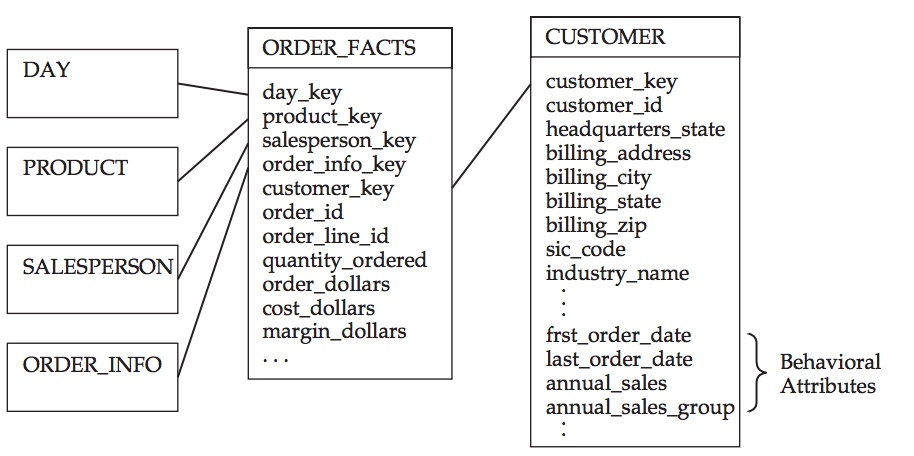

维度表是实现强有力分析的基础，本文主要介绍一些维度设计的高级主题。
1. 组合维度
实际应用中，我们有时候很难确定如何将维度属性放到同一个维度表中。比如顾客和销售是否是一个维度，商品和品牌是否是一个维度。通过本小节你就能知道如何去组合维度。
1.1 关联维度属性的两种方法
维度模型中维度属性的之间的关系，不像ER模型那么明确。所以我们需要额外的自己去发掘维度属性间的关系。
描述环境的明确关系
每一个事实表中都有一个或者多个引用维度表的外键。这些引用为事实表提供了维度环境。而这些链接也看成了维度表之间存在关系的信息，这是明确的关系。
图中，Product，SalesPerson，Day， Customer，Order_info这些维度通过事实表建立了明确的联系，这些联系我们一眼就可以确定。这些关系都是基于事实表，也就是过程建立的。
描述亲和性的隐含关系
与ER模型不同，维度模型通过冗余了数据，使得原先一些明确的关系变得隐秘了。比如在Product维度表中，product和brand他们在一张共享表内，他们的关系就变成隐含关系了。
当然我们也可以把Brand维度拆出来，和Product通过代理建连接，他们的关系也变成了明确关系，但是这样就变成了雪花模型，大大加大了分析复杂度，这里我们并不提倡。
product与brand的关系是一对多的关系，即product是brand的成员。相比于product与customer这种通过业务过程建立的明确关系，这是一种不依赖于业务活动的自然的亲和性。
1.2 如何进行维度组合
基于1.1节我们就可以给出维度组合的方法了。
- 如果两个维度属性共享一个自然的亲和性关系，并且同时出现在一个环境时，那么他们就可以组成一个维度表。如果没有订单，product也会有brand属性，他们的关系是不依赖于业务过程或者事实的。这些维度属性往往只能在一种方法或者一种环境中使用。比如除了product，brand还可以跟其他什么维度结合？
- 如果两个维度属性的关系由事物或者活动来决定，并且存在于不同的环境之中，应该将他们放置在不同的维度表中。他们的关系是依赖于事实表的，当销售和客户之间有事实发生，他们之间就有了关系。当这个事实没有发生，他们之间就没有关系。
2. 拆分维度
当一个维度表的宽度特别大时，且有很多维度发生缓慢变化时候，我们的开发维护就会变得特别困难。试想一下，当很多维度发生缓慢变化，那么对于整个维度表的来讲变化就会很剧烈。这个时候我们需要拆分维度表。
2.1 傻瓜式的拆分
之所以取傻瓜式的拆分这个名字，主要还是从反面来讲解这个方法，当然也是不推荐的。
上图可以看出，他将Customer维度表拆分成了Customer_part1和Customer_part2。两者共享相同customer_key且一一对应。
这样的拆分有以下几大问题:
- 主键连接，大大增加分析复杂度
- 主键一一对应，加大了ETL开发难度
- 当part2的某个属性缓慢变化时，part1的相应属性也需要做缓慢变化处理。同理part1的属性缓慢变化。反而加大的etl的开发难度。
所以这种方式的拆分，没有更本上解决问题。
2.2 使用微型维度来进行拆分
我们可以将稳定的核心的维度属性保留，将那些不稳定，缓慢变化的维度属性独立构成一个或者多个微型维度。比如以下这个例子
原始的POLICY维度表中，policy_holder和address等核心维度没有发生变化，但是family_size和marital_status等维度发生了缓慢变化。
现在将上表用微型维度来进行拆分，微型维度有自己的代理键，并可以关联到事实表中。
通过将原来的POLICY维度拆分成现有的POLICY维度和POLICY_COVERAGE两个维度。POLICY只保留稳定的，不变的，核心维度属性，比如policy_holder和address。 POLICY_COVERAGE这个微型维度包含了family_size和marital_status等缓慢变化，且可以枚举所有可能的微型维度属性。
通过这样，数据的增加大大的得到了控制。
当然利用微型维度进行拆分也是有缺点的，拆分前我可以浏览整个维度的属性非常简单，拆分后就需要进行两表的关联。当然我们也可以在POLICY表中增加POLICY_COVERAGE的代理键，这样就可以对最新状态的微型维度的维度属性进行浏览。注意哦，这里只能浏览最新状态，历史状态是无法浏览的。
3. 角色维度
业务过程中度量可以包含维度的多个实例，比如保险保单表中就有投保人，被投保人，他们可以都是用户表的一个实例。那么这两种关系被称为角色，在事实表中通过引用同一维度的多个外键表示。查询时则使用别名来进行区分。
维度表可以参与事实表的多个关系，每个关系称为一种角色。这种多对多的关系时候，没必要为维度建立多个副本，通过角色在事实表中连接维度的视图或别名到适当的外键上。
4. 空值处理
在关系型数据库中会允许空值的存在，但是如果在数据仓库中存在空值将对分析结果产生不确定性，因此我们需要对空值进行处理。
维度列
如果在维度列中存在空值，那么当我们进行查询时候, 比如
select
count(1) as cnt
from a
where tax_exampt_status <> "Tax Exempt"
就会把空值的结果遗漏。正确的写法是：
select
count(1) as cnt
from a
where tax_exampt_status <> "Tax Exempt"
or tax_exampt_status is null
这种处理如果都在分析的时候进行，不但繁琐还容易出错，所以我们要将空值处理掉。
在维度中不允许存储空值，而要选择某个值作为当数据无效时存储的值，比如N/A
事实表的空外键
有时候事实表不能关联上维度表，因为事实表的外键为空。一般情况，只能使用外连接来关联维度表以克服这个问题。我们不能直接把空外键的事实行过滤掉，因为这样影响事实的分析。所以我们还是得补上外键的值，使得外键列不为空。
空值时的特殊处理
- 如果是STRING类型建议用类似“N/A”的来替换，如果是整数就用0，如果是时间就用未来的时间，比如“9999-12-31”
- 如果某一刻时间，维度表中的记录还未生成，事实表中的记录已经生成。或者事实表的某记录键出现错误。这个时候都可以在维度表中新建一条记录分别type为“Invalid”，“Unkonow”，其他为"N/A"，如下图所示
- 如果一条事实表中，有两个时间时段，start_date,end_date。 在end_date还未更新，start_date已经更新，那么我们可以将本来为null的end_date 设为未来时间比如"9999-12-31"
5. 行为维度
何为行为维度，就是有时候需要将事实表的一些事实转换为维度。它将一些表报时候的查询环境固化到维度表中。比如"产生超过100万美元的订单的用户与产生50万美元或更少订单的客户比较，有更多折扣吗"，该分析需求如果直接分析比较复杂，会有很多子查询。但是当我们把“订单的金额”这个指标，固化到用户表的维度属性中，那查询就非常简单了。
与另一个维度表关联

我们来看这个例子，我们从ORDER_FACTS这个事实表中计算出了first_order_date,last_order_date,annual_sales,annual_sales_group这几个指标，并关联到CUSTOMER维度表中，作为了它的行为属性。
历史事实
行为属性也能捕获维度中关于有效存放时间的具有历史意义的事实，上图中annual_sales累计计算了过去一年的历史事实。
有了这个行为属性，我们查看过去一年下单金额超过100万的用户只需要 where annual_sales > 1000000 而不需要进行子查询了。
分类事实
annual_sales_group就是个分类事实作为行为维度的例子。
- 年销售额低于500000
- 年销售额在500000与1000000之间
- 年销售额超过1000000
同样大大简化了查询。
行为维度设计要素
行为维度大大简化了分析查询，但是由于行为维度是基于事实表得出的，他本身就是缓慢变化的，因此一旦使用它增加维护成本，我们需要权衡。如果这种需求较大，可以考虑作为行为维度。如果较少，还是放在临时查询事实表为好。
6. 总结
本文主要介绍了维度表设计的一些高级主题，在后续的文章中，我们仍然接着展开维度表的设计。
本文完。